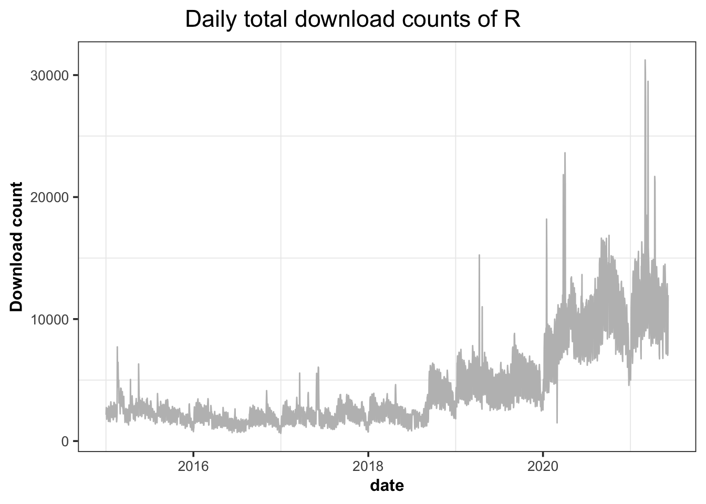

2.2 Daily downloads of R

## .
## 2.0.0 2.0.1 2.1.0 2.1.1 2.10.0
## 299 197 222 278 1455
## 2.10.1 2.11.0 2.11.1 2.12.0 2.12.1
## 1431 1681 1719 1387 1317
## 2.12.2 2.13.0 2.13.1 2.13.2 2.14.0
## 1346 1571 1532 1950 1605
## 2.14.1 2.14.2 2.15.0 2.15.1 2.15.2
## 1732 1644 2151 1995 1845
## 2.15.3 2.2.0 2.2.1 2.2.1pat 2.3.0
## 2830 280 267 42 242
## 2.3.1 2.4.0 2.4.1 2.5.0 2.5.1
## 255 265 275 285 289
## 2.6.0 2.6.1 2.6.2 2.7.0 2.7.1
## 272 238 257 281 263
## 2.7.2 2.8.0 2.8.1 2.9.0 2.9.1
## 245 282 302 302 280
## 2.9.2 3.0.0 3.0.1 3.0.2 3.0.3
## 379 2476 2469 2450 3209
## 3.1.0 3.1.1 3.1.2 3.1.2patched 3.1.3
## 3144 3378 3770 54 3150
## 3.1.3beta 3.1.3patched 3.1.3rc 3.2.0 3.2.0alpha
## 3 37 14 2719 13
## 3.2.0beta 3.2.0patched 3.2.0rc 3.2.1 3.2.1beta
## 8 50 12 4348 3
## 3.2.1patched 3.2.1rc 3.2.2 3.2.2beta 3.2.2patched
## 41 14 3531 5 71
## 3.2.2rc 3.2.3 3.2.3beta 3.2.3patched 3.2.3rc
## 11 3047 2 69 6
## 3.2.4 3.2.4beta 3.2.4patched 3.2.4rc 3.2.4revised
## 2068 2 20 6 463
## 3.2.5 3.2.5patched 3.3.0 3.3.0alpha 3.3.0beta
## 1910 8 3219 4 17
## 3.3.0patched 3.3.0rc 3.3.1 3.3.1beta 3.3.1patched
## 29 4 2829 2 70
## 3.3.1rc 3.3.2 3.3.2patched 3.3.2rc 3.3.3
## 6 2927 75 4 4108
## 3.3.3patched 3.3.3rc 3.4.0 3.4.0alpha 3.4.0beta
## 32 7 3343 10 5
## 3.4.0patched 3.4.0rc 3.4.1 3.4.1beta 3.4.1patched
## 46 4 3133 2 58
## 3.4.1rc 3.4.2 3.4.2beta 3.4.2patched 3.4.2rc
## 4 2538 1 35 4
## 3.4.3 3.4.3beta 3.4.3patched 3.4.3rc 3.4.4
## 3083 3 55 4 3163
## 3.4.4patched 3.4.4rc 3.5.0 3.5.0alpha 3.5.0beta
## 9 8 2898 9 3
## 3.5.0patched 3.5.0rc 3.5.1 3.5.1patched 3.5.1rc
## 30 8 2947 144 2
## 3.5.2 3.5.2beta 3.5.2patched 3.5.2rc 3.5.3
## 2228 2 99 6 2282
## 3.5.3beta 3.5.3patched 3.5.3rc 3.6.0 3.6.0alpha
## 1 53 9 2110 19
## 3.6.0beta 3.6.0patched 3.6.0rc 3.6.1 3.6.1beta
## 8 85 10 2129 6
## 3.6.1patched 3.6.1rc 3.6.2 3.6.2.nn 3.6.2beta
## 228 11 1492 480 3
## 3.6.2patched 3.6.2rc 3.6.3 3.6.3.nn 3.6.3beta
## 96 9 1298 422 10
## 3.6.3patched 3.6.3rc 4.0.0 4.0.0alpha 4.0.0beta
## 55 7 1117 18 6
## 4.0.0patched 4.0.0rc 4.0.1 4.0.1beta 4.0.1patched
## 47 8 828 6 17
## 4.0.1rc 4.0.2 4.0.2beta 4.0.2patched 4.0.2rc
## 11 965 3 120 9
## 4.0.3 4.0.3beta 4.0.3patched 4.0.3rc 4.0.4
## 633 8 132 22 227
## 4.0.4beta 4.0.4patched 4.0.4rc 4.0.5 4.0.5beta
## 3 45 10 98 4
## 4.0.5patched 4.0.5rc 4.1.0alpha devel devel.exe
## 31 4 10 1819 1
## latest patched.exe release release.exe
## 4928 106 370 138